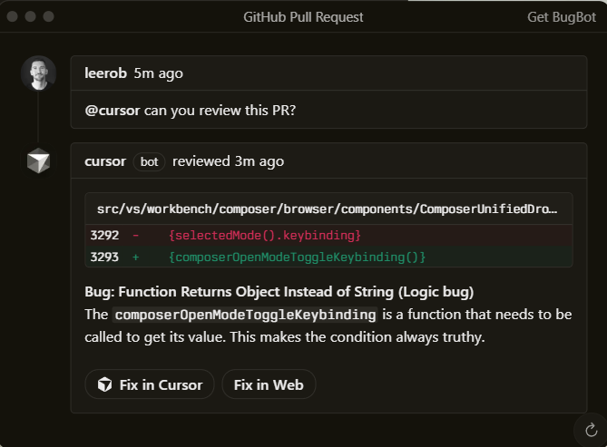
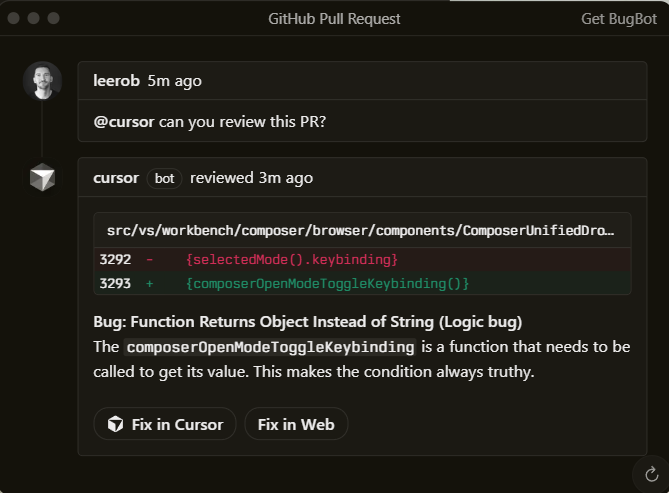

Built to make you extraordinarily productive,
Cursor is the best way to code with AI.
Trusted every day by teams that build world-class software


Agents turn ideas into code
Accelerate development by handing
off tasks to Cursor, while you focus on
making decisions.
Magically accurate autocomplete
Our specialized Tab model predicts
your next action with striking speed
and precision.
In every tool, at every step
Cursor reviews your PRs in GitHub,
collaborates in Slack, and runs in
your terminal.
 

The new way to build software.
“It was night and day from one batch to another,
adoption went from single digits to over 80%. It just
spread like wildfire, all the best builders were using
Cursor.”
Diana Hu
General Partner, Y Combinator
“My favorite enterprise AI service is Cursor. Every one
of our engineers, some 40,000, are now assisted by
AI and our productivity has gone up incredibly.”
Jensen Huang
President & CEO, NVIDIA
“The best LLM applications have an autonomy slider:
you control how much independence to give the AI.
In Cursor, you can do Tab completion, Cmd+K for
targeted edits, or you can let it rip with the full
autonomy agentic version.”
Andrej Karpathy
CEO, Eureka Labs
“Cursor quickly grew from hundreds to thousands of
extremely enthusiastic Stripe employees. We spend
more on R&D and software creation than any other
undertaking, and there's significant economic
outcomes when making that process more efficient.”
Patrick Collison
Co‑Founder & CEO, Stripe
“The most useful AI tool that I currently pay for, hands
down, is Cursor. It's fast, autocompletes when and
where you need it to, handles brackets properly,
sensible keyboard shortcuts, bring-your-own
-model... everything is well put together.”
shadcn
Creator of shadcn/ui
“It's definitely becoming more fun to be a
programmer. We are at the 1% of what's possible, and
it's in interactive experiences like Cursor where
models like GPT-5 shine brightest.”
Greg Brockman
President, OpenAI
Stay on the frontier
Choose between every cutting-edge model from
OpenAI, Anthropic, Gemini, xAI, and Cursor.
Cursor learns how your codebase works, no matter
the scale or complexity.
Trusted by over half of the Fortune 500 to accelerate
development, securely and at scale.
Changelog
2.4 Jan 22, 2026
Subagents, Skills, and ImageGeneration
Jan 16, 2026
CLI Agent Modes and Cloud HandoffJan 8, 2026
New CLI Features and Improved CLIPerformance
2.3 Dec 22, 2025
Layout Customization and StabilityImprovements
See what's new in Cursor →
Cursor is an applied research team
focused on building the future of
software development.

We're making a part of our multi-agent research harness available to try today
in preview.
Over 90% of developers at Salesforce now use Cursor, driving double-digit
improvements in cycle time, PR velocity, and code quality.
A comprehensive guide to working with coding agents, from starting with plans to
managing context, customizing workflows, and reviewing code.